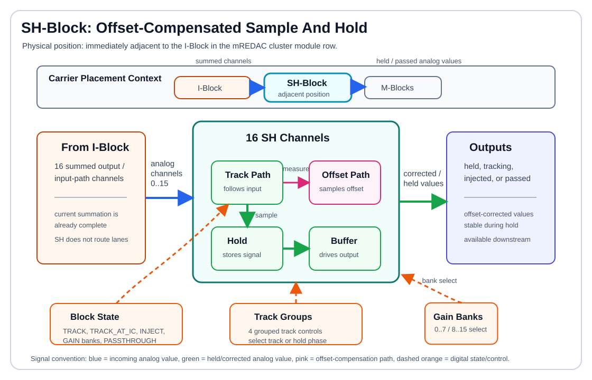

SH-Block¶
The SH-Block is the sample-and-hold block of an mREDAC cluster. It receives the 16 summed output/input-path channels from the I-Block side of the cluster, can track or freeze those analog values, and applies channel-local offset compensation so that a held value is not dominated by the internal offset of the sample-and-hold path.
In the cluster signal chain, the SH-Block is a function block rather than a routing matrix:
- It receives the I-Block's 16 summed channels.
- Its held, tracking, injected, or passed outputs continue toward the cluster M-Block input side.
- It contains 16 active sample-and-hold channels.
- It can track live analog values or hold previously sampled values.
- It supports offset-compensated hold behavior using a separate compensation sample path.
- It supports injection, gain-calibration, and passthrough-oriented operating states at the protocol level.

Hardware Role¶
The SH-Block contains 16 sample-and-hold channels. Each channel is built around a double sample-and-hold structure:
- A signal sample path captures the requested analog channel value.
- A compensation sample path captures the internal offset of the channel.
- A hold capacitor stores the sampled signal value while the channel is in hold mode.
- A buffer stage isolates the stored value from the input path and downstream load.
- An injection path can drive a prepared or stored value into the analog path in controlled modes.
- Digital state logic selects tracking, hold, injection, gain-calibration, or passthrough behavior.
The downstream load for normal computation is the installed M-Block hardware. Depending on the cluster configuration, those M-Block positions may contain integrators, multipliers, MDR elements, or other M-Block variants. The SH-Block does not choose the M-Block function; it prepares the analog channel values that are then consumed by the M-Block input interface.
The block is used when a value must be captured at a defined execution phase and kept stable while other parts of the analog computation continue. Typical use cases include initial-condition handling, phase-dependent sampling, and calibration-oriented operation.
Signal Interface¶
The SH-Block module exposes a wider analog connector interface, but the active sample-and-hold function is organized around 16 channels:
- The incoming 16 functional channels correspond to the summed I-Block output/input-path channels.
- The hardware interface also carries lane-style connector signals used by the carrier/module infrastructure.
- The active SH function should be documented as 16 channels, not as a 32-way routing crossbar.
- Unused or unsupported connector positions are outside the functional sample-and-hold path.
The wider connector naming, for example BL_IN0..31 / BL_OUT..., belongs to the carrier/module interface and should not be interpreted as 32 active SH channels. Functionally, the documented sample-and-hold path is 16 active channels.
This distinction matters because the SH-Block does not choose which weighted lanes are summed. Source selection, coefficient weighting, routing, and summation are handled upstream by the U-Block, C-Block, T-Block, and I-Block. The SH-Block acts on the already formed 16 analog channels.
Offset Compensation¶
Sample-and-hold circuits introduce offset through switches, buffers, leakage paths, charge injection, and finite amplifier accuracy. The SH-Block compensates this by separating offset measurement from signal holding.
The compensation sequence is:
- The channel enters an offset-measurement phase.
- The compensation path samples the internal offset of the sample-and-hold channel.
- The stored offset is retained as a local correction value.
- The channel samples or tracks the requested analog signal.
- During hold, the stored signal value is driven with the stored offset cancelled by the compensation path.
Conceptually, one compensated channel behaves as:
The real analog implementation is switch-controlled and buffer-based, but this equation captures the documentation-level behavior: the output should represent the intended analog value more closely than an uncompensated hold capacitor would.
Offset compensation is local to each channel. Each channel samples its own offset, so the correction follows the analog path that actually stores and drives the held value.
Track, Hold, And Passthrough Behavior¶
The SH-Block distinguishes between live tracking and stored operation:
- In tracking mode, the output follows the input through the active sample path.
- In hold mode, the sampling switch opens and the stored capacitor voltage drives the output.
- During offset measurement, the compensation path samples the internal offset rather than the external signal value.
- During compensated hold, the stored signal and stored offset are combined so that the output remains stable and offset-corrected.
- In passthrough-oriented operation, the block behaves as a direct analog path rather than intentionally storing a value.
In all of these cases, the value at the SH output is the value presented onward to the M-Block input path. The difference between the modes is whether that value is live, held, injected, compensated, or directly passed.
The block-level state machine also supports injection and gain-calibration states. These modes are controlled by configuration/protocol state rather than by a high-level method on the Python SHBlock class.
Channel Organization¶
The active SH function is organized as 16 channels:
- Channels
0..15are the functional sample-and-hold channels. - Gain-related control is split into two banks:
0..7and8..15. - Tracking control is grouped; the hardware provides four track-control groups rather than 16 completely independent track lines.
- The grouped controls select whether channel groups follow the input or hold their stored value during a given execution phase.
The two gain banks are exposed in the protocol state names as GAIN_ZERO_TO_SEVEN and GAIN_EIGHT_TO_FIFTEEN.
Operating States¶
The protocol-level configuration represents the SH-Block with a ShiftHoldConfig state. The relevant states are:
TRACK: keep the sample-and-hold path tracking the input.TRACK_AT_IC: track during the initial-condition phase, then hold for operation.INJECT: drive a stored or prepared value into the analog path.GAIN_ZERO_TO_SEVEN: select the gain-calibration path for channels0..7.GAIN_EIGHT_TO_FIFTEEN: select the gain-calibration path for channels8..15.PASSTHROUGH: bypass intentional sample-and-hold behavior and pass the signal through.
These states describe block-level behavior. They should not be interpreted as lane routing commands; the SH-Block does not replace the U/C/T/I routing fabric.
Example Signal Flow¶
A typical tracking flow is:
- The I-Block presents a summed analog channel to the SH-Block.
- The SH-Block channel is placed in tracking mode.
- The sample path and buffer follow the incoming analog value.
- The output reflects the current input value.
A typical compensated hold flow is:
- The compensation path measures the channel's internal offset.
- The signal path samples the desired analog value.
- The channel enters hold mode.
- The output is driven from the stored value with the measured offset compensated.
- The held value remains available while the upstream analog channel changes.
A typical initial-condition flow is:
- The SH-Block tracks during initial-condition setup.
- At the transition into operation, the channel holds the prepared value.
- The held value is used as a stable analog condition during the operation phase.
A typical gain-calibration flow is:
- One of the two channel banks is selected.
- The SH-Block applies the gain-calibration behavior to the selected bank.
- Calibration can measure or correct channel behavior for channels
0..7or8..15separately.
Programming With pybrid¶
The SH-Block is available on a cluster as cluster.shblock when the connected hardware specification includes it.
At the block level, pybrid currently treats it as a registered function block:
The high-level block class does not currently define methods such as reset(), track(), hold(), or passthrough(). SH-Block runtime behavior is represented at the protocol/configuration layer by the ShiftHoldConfig state machine.
When documenting or programming against the current pybrid API, assume:
cluster.shblockidentifies the block in the cluster entity tree.- SH-Block state selection is currently a configuration/protocol concern rather than a convenience method on the Python block class.
- Higher-level helpers may later wrap the protocol states, but those helpers are not currently part of the
SHBlockclass.
Configuration Model¶
The SH-Block configuration is best understood as a block-level state plus grouped channel controls:
- The block state selects tracking, initial-condition tracking, injection, gain calibration, or passthrough behavior.
- Track controls decide whether channel groups follow the input or hold the stored value.
- Gain-bank controls select channels
0..7or8..15for gain-related calibration behavior. - Offset compensation is implemented in the analog channel path by sampling the channel offset before using the held signal.
This mirrors the hardware behavior: each SH channel is an analog storage and compensation cell, while digital logic selects the operating phase for channel groups and banks.